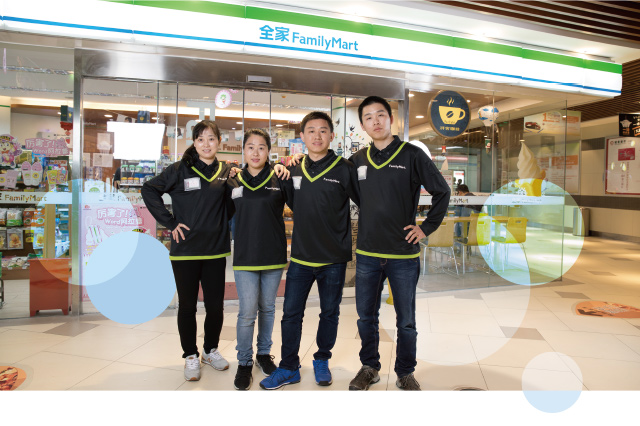

杨军的家乡在福建三明，刚来上海时他接触过很多行业，有段时间在中山公园商圈附近的咖啡馆工作，经常光顾一家全家便利店，全家给他的感觉很明亮，购物体验很好。于是杨军萌生了加盟的想法。2008年6月，他加盟了位于湖北路第167家全家便利店。

10元早餐和外送，收银机以外的创收
湖北路的门店后来因为房租合约到期不复存在，杨军之后陆续加盟了西藏中路店、制造局路二店、黄陂南路地铁站店、日月光商场和地铁店。
2013年5月，杨军复数了黄陂南路地铁站店，全家10元早餐的先河就源自这里。这家店很特殊，店面小、客流量却非常大，为了能分流早尖峰的客人，杨军的爸爸想出一个金点子：在店门口搭张桌子售卖早餐，10元套餐包括三明治或饭团搭配鲜牛奶，并以“10元早餐带着走”的口号为宣传点，一天最高可卖200份早餐。这个金点子不仅提高了门店日商，在收银机之外获得创收，更是为全家创下10元早餐的先河。
因为是特殊通路，门店的品项有局限，想提高日商，必须杀出另一条血路。“有一天中午，新天地的一家餐厅来全家订了30份午餐，向餐厅经理了解后，我发现餐厅员工每天都需要到外面解决午餐，自然而然，我和他们达成了提供外卖的合作。”这一送就是两年多，每天60份外卖，逢年过节、刮风下雨照送不误，所有外送都是杨军和爸爸亲力亲为，日商一下子提高到了2万多。“这些都是从店里走出去额外做的日商。”